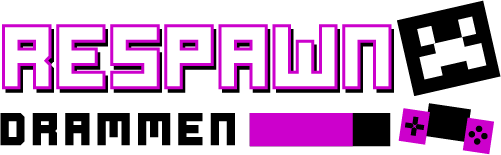
Gjør du noe gøy i helgen? Glem det, og kom til Respawn Drammen. Vi inviteter alle gaming-engasjerteungdom til en helg fylt med gaming aktiviteter. Ta med vennene dine, vinn premier og dominer!
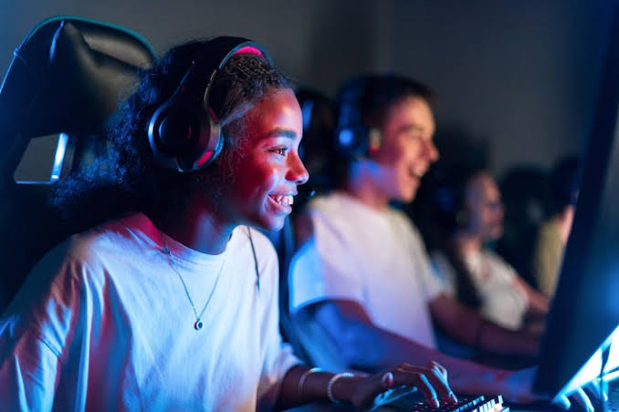
Respawn Drammen offrer mange gaming-relaterte aktiviteter! Se gjennom en liste av forkjellige gaming-opplevelser, og velg de som passer deg best!
Bygg, skyt og outplay motstanderne i Respawns største Fortnite Battle Royale! Solo og Duo-format – med kvalifisering på fredag og finale på lørdag kveld. Showmatch med kjente streamere avslutter eventet, så gjør deg klar for Victory Royale! Premier til topp 3 og egen “Most Creative Play”-pris.
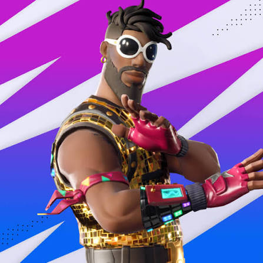
Summoner’s Rift blir kampplass når Norges beste lag møtes for å kjempe om heder, ære og premiepotten! Er du klar for å vise hvem som virkelig eier midlane? Gruppespill fredag, sluttspill og finale på søndag. Kampene kommenteres live av casterteamet på hovedscenen!
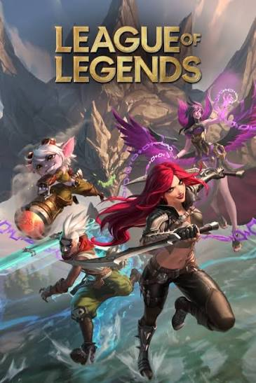
Strategi, lagspill og intense kamper – DOTA 2-turneringen på Respawn Drammen samler både erfarne og ferske lag.Delta i åpen kvalifisering, eller følg de beste lagene på storskjerm med live-kommentarer.
🏆Vinnerlaget får eksklusiv Respawn-merch og en plass i neste års invitational.
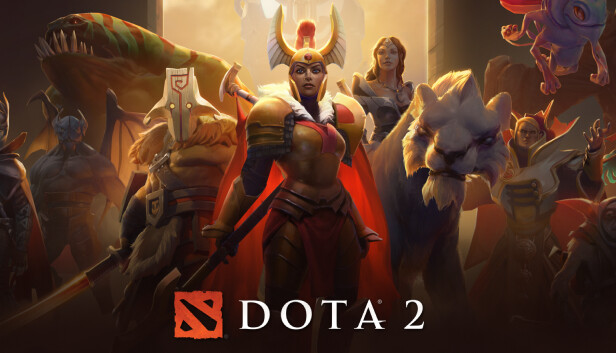
Test reflekser og presisjon i Valorant! Formatet er kort og intenst – Spike Rush, best-of-3, raske runder og masse hype. Perfekt for lag som vil vise skills uten å spille hele natta. 🎯 Beste spill øyeblikk vises på storskjermen gjennom helgen!
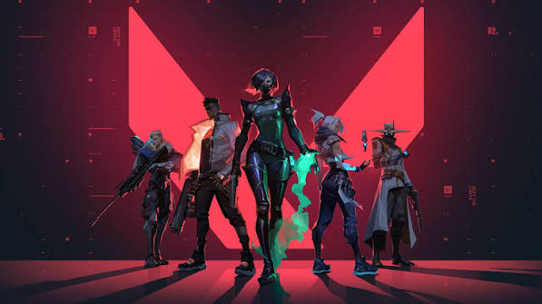
Bli blant de første til å teste nye, norske indie-prosjekter! Utviklere fra hele landet viser frem prototyper, konsepter og ferdige spill – og du kan stemme frem publikumsfavoritten. 👾 Kanskje du finner ditt nye favorittspill her!
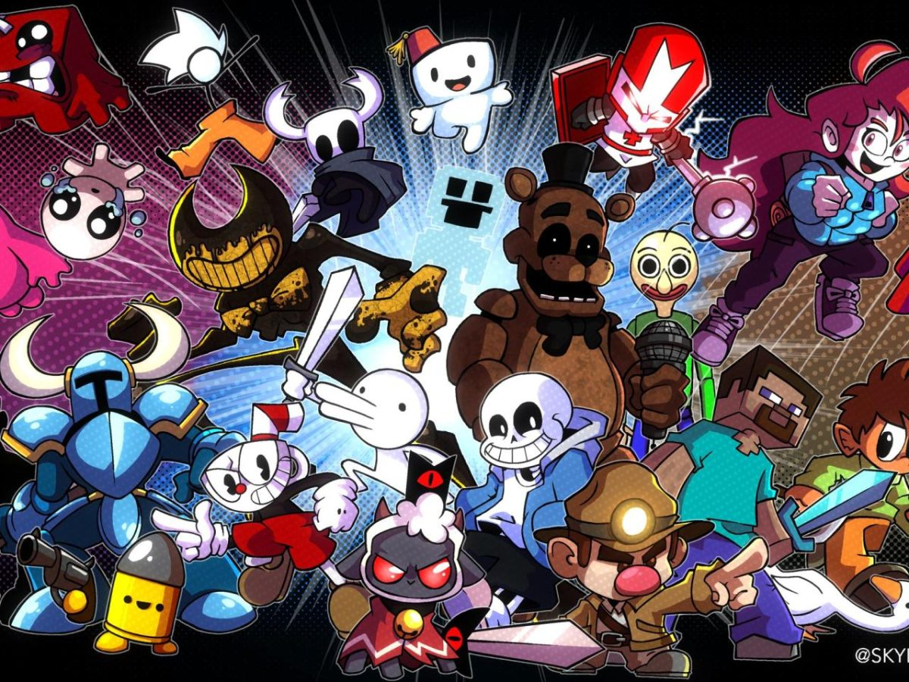
Hvordan klarer noen å runde Super Mario 64 på under 2 timer? Opplev det live! Kjente speedrunnere tar scenen og viser triks, glitches og ekstrem presisjon. Publikum får velge hvilke spill som skal speedrunnes under helgen!
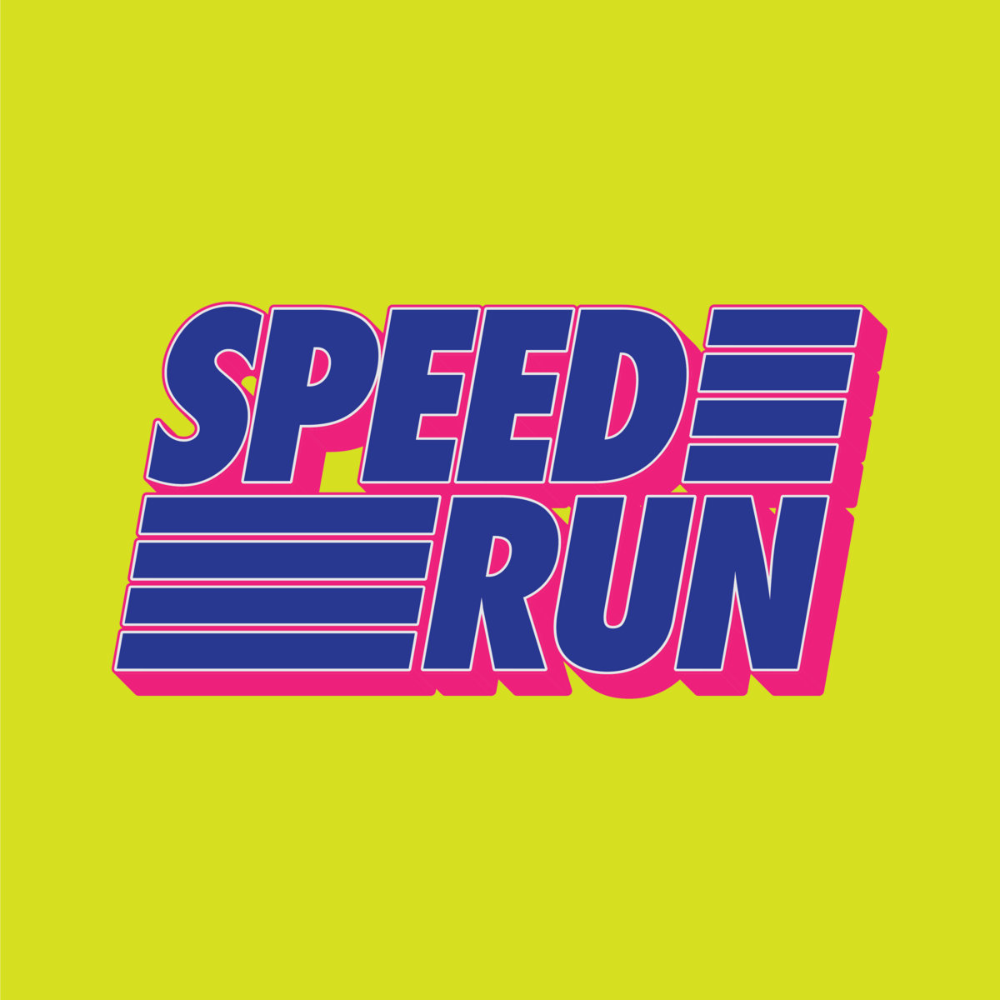
Lær hvordan du setter sammen en PC som yter maks til gaming – og ser episk ut. Eksperter viser kabling, kjøling, RGB-oppsett og hvordan du får mest ytelse for pengene. Perfekt for både nybegynnere og hardcore moddere.
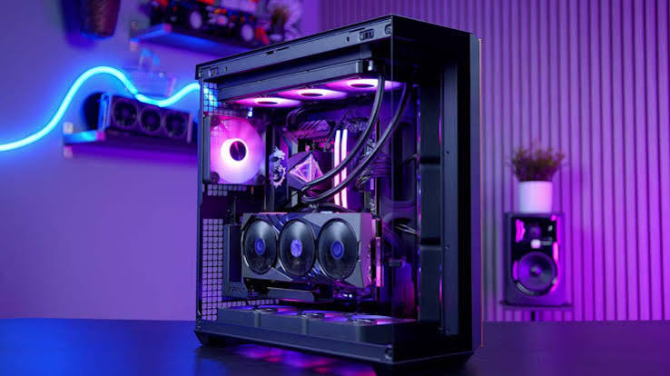
Når turneringene er over, fortsetter stemningen! DJ-sets, gaming-lys og loungestemning i egen Chill Zone. Ta med vennene dine, slå av litt, og lad opp til neste dag med musikk og gaming-vibes.
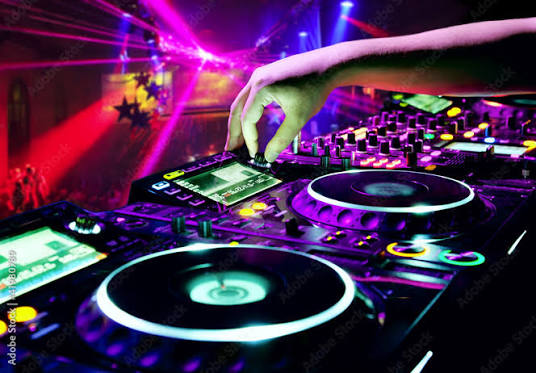
Enten du er en erfaren cosplayer eller prøver deg for første gang, er Respawn Cosplay-konkurransen høydepunktet for alle som elsker kostymer, fantasy og håndverk!
Her møtes skaperglede, lidenskap og kreativ galskap i en episk konkurranse på hovedscenen.
Vis frem ditt beste kostyme, inspirert av spill, anime, film eller egen fantasi – og imponer både publikum og dommere.
🏆 Kategorier:
• Best in Show – For den mest komplette, helhetlige opptredenen
• Craftsmanship Award – For håndverk, detaljer og teknikk
• Publikumsfavoritt – Stemmes frem live under showet
📅 Tidspunkt: Lørdag kl. 16:00
📍 Sted: Hovedscenen
📝 Påmelding: Ved cosplay-standen innen lørdag kl. 14:00
Hold fokuset på spillet, ikke køen!
Med Respawn Kioskappen kan du bestille snacks, drikke og varm mat rett fra mobilen din – og hente det når det passer deg.
Last ned appen via QR-koden på messen, velg stand, betal digitalt og respawn med energi!
Kjøp eller vinn eksklusivt merch fra Respawn Drammen gjennom merch stander som du finner omkring i messen. Bevis til alle at du dominerte under Drammen Respawn 2026!
Ved å besøke aktiviterer i messen, kan du fylle ut ditt aktivitetskort, og få en t-sjorte med alle stedene du var. Du kan også vinen en fra DOTA 2 turneringen (se over)
Noen spørsmål? Let etter ansatte med ansatt/employee t-skjorten!
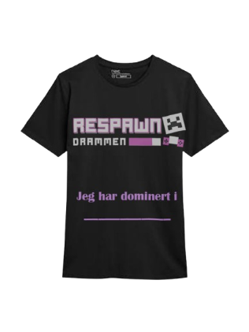
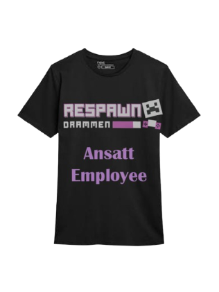
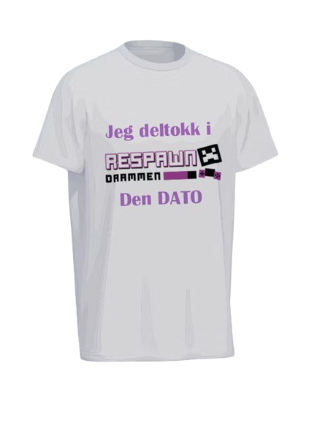
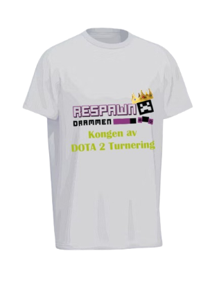
Timeplan Lørdag
10:00 – Dørene åpner / Free play starter
FPS, retro, VR og co-op-soner åpne for alle.
11:00 – Valorant: Spike Rush Showdown (E-sportsonen)
Raske kamper, høyt tempo – hvem treffer mest presist?
13:00 – Cosplay Parade & Photoshoot (Hovedscene)
Få en sniktitt på årets kostymer og møt deltakerne i cosplay-konkurransen.
14:00 – DOTA 2: The Ancient Awakens – Gruppespill (Arena 2)
Strategi, lagspill og tette kamper om finaleplassene.
16:00 – Cosplay-konkurransen (Hovedscene)
Mer info i egen artikkel over 🎭
18:00 – Fortnite: Semifinaler (Hovedarena)
De beste fra gårsdagens kvalifisering møtes til kamp.
20:00 – Speedrun Arena (Utstillerhall B)
Live speedruns på ikoniske spill – du velger hva som skal spilles!
22:00 – Respawn After Dark – Chill & DJ Night
Rolig stemning, retrospill, musikk og VR-danserom.
Timeplan Søndag
10:00 – Dørene åpner
Siste sjanse til å prøve alt du ikke rakk!
11:00 – League of Legends: Sluttspill og finale (Hovedarena)
Casterne tar deg gjennom hvert play. Publikum heier, stemningen koker.
13:00 – DOTA 2: Grand Final (Arena 2)
To lag. Én vinner. Hvem tar trofeet hjem?
15:00 – Fortnite: Respawn Royale – Grand Final (Hovedarena)
Finalistene kjemper om seieren i årets største Battle Royale.
16:30 – Premieutdeling og avslutningsshow (Hovedscene)
Cosplay-priser, turneringsvinnere og publikumsfavoritter kunngjøres.